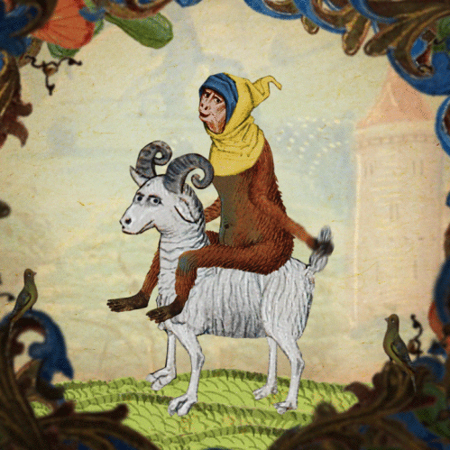
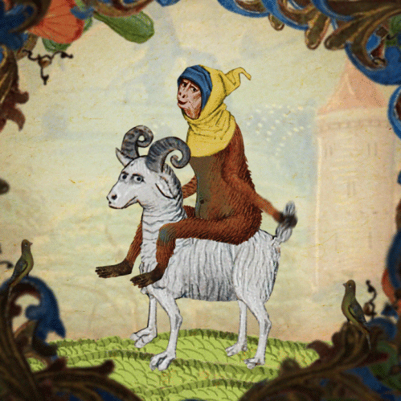

Il mio Viaggio nel Medioevo
 

Le mie spese
| Chi siete? |
Cosa portate? |
Si ma quanti siete? |
| "Quello di prima" |
Olive, caciotta, pane |
1 |
| Totale |
|
1 Fiorino ✠ |
Cose da fare
- Visitare Gerusalemme ✗
- Farsi scomunicare dal Papa ✓
- Sopravvivere ad una pademia ✓
- Mangiare✗
Info utili:
- Date da conoscere
- 1155 Federico Barbarossa imperatore
- 1346 Peste Nera
- 1492 Scoperta dell'America, presa di Granada, morte di Lorenzo de Medici detto il magnifico, fine del Medioevo
- Alloggio
- Nome ostello: I tre re
- Indirizzo ostello: Via francigena, Canterbury - Santa Maria di Leuca
- Aereo
- NESSUN AEREO, SI VA A PIEDI.